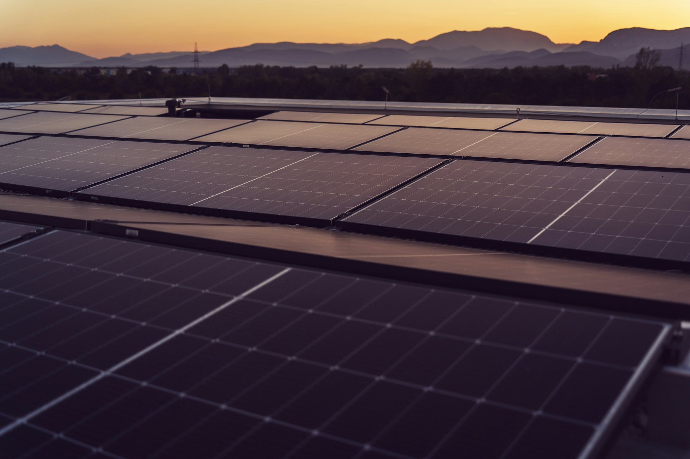

Pagina asta e off-grid.
Nu am găsit ce căutai. Poate linkul e vechi sau pagina s-a mutat. De aici te reconectezi la rețea:
Înapoi acasă
Nu am găsit ce căutai. Poate linkul e vechi sau pagina s-a mutat. De aici te reconectezi la rețea:
Înapoi acasă